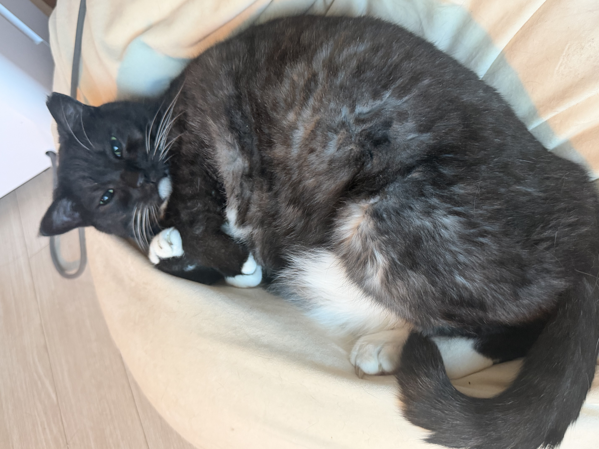
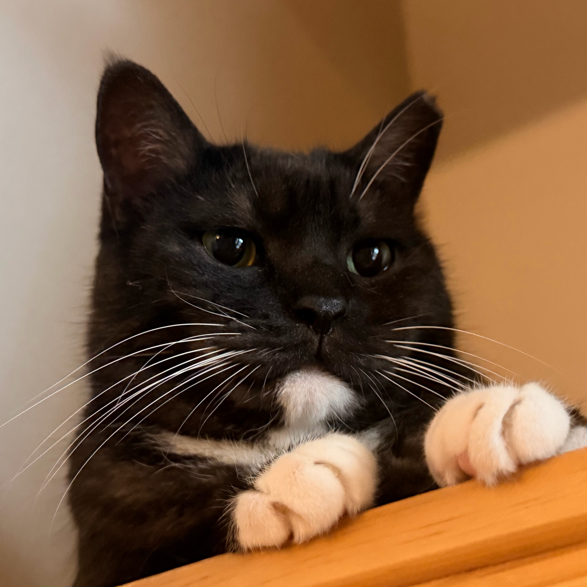
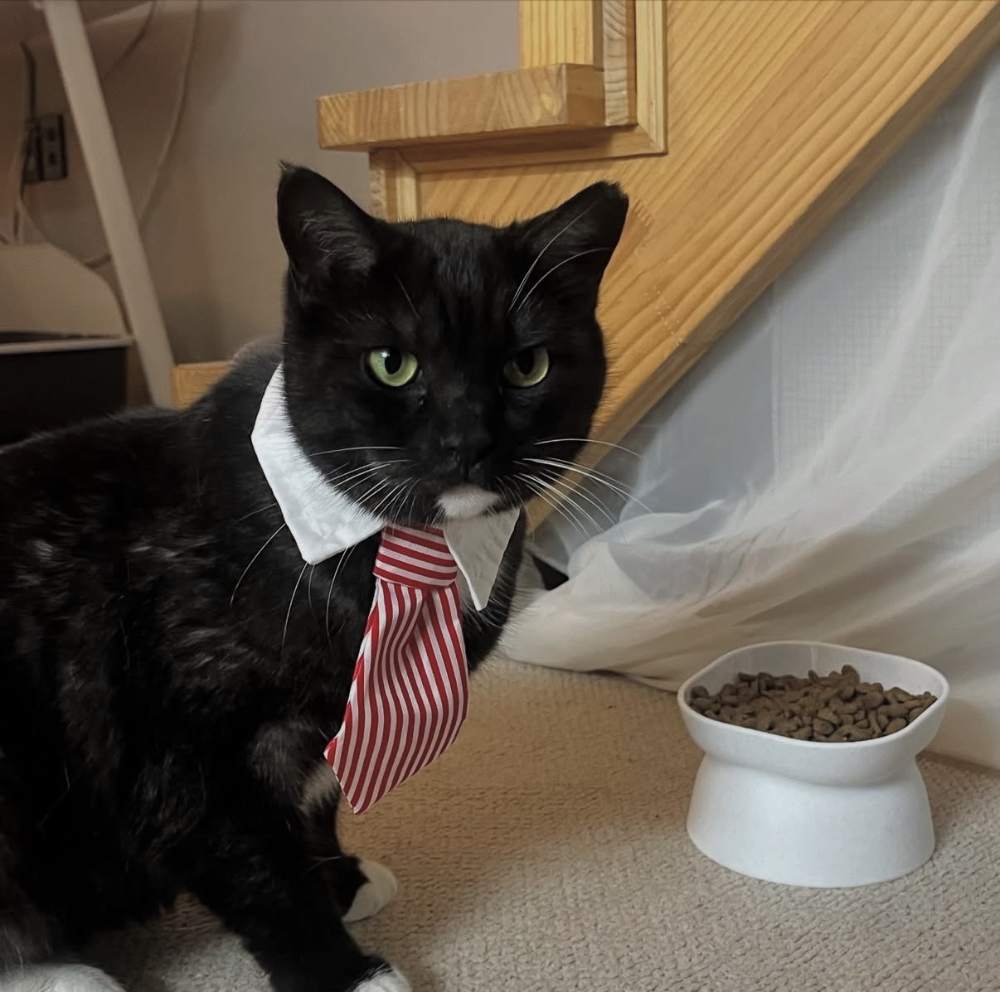
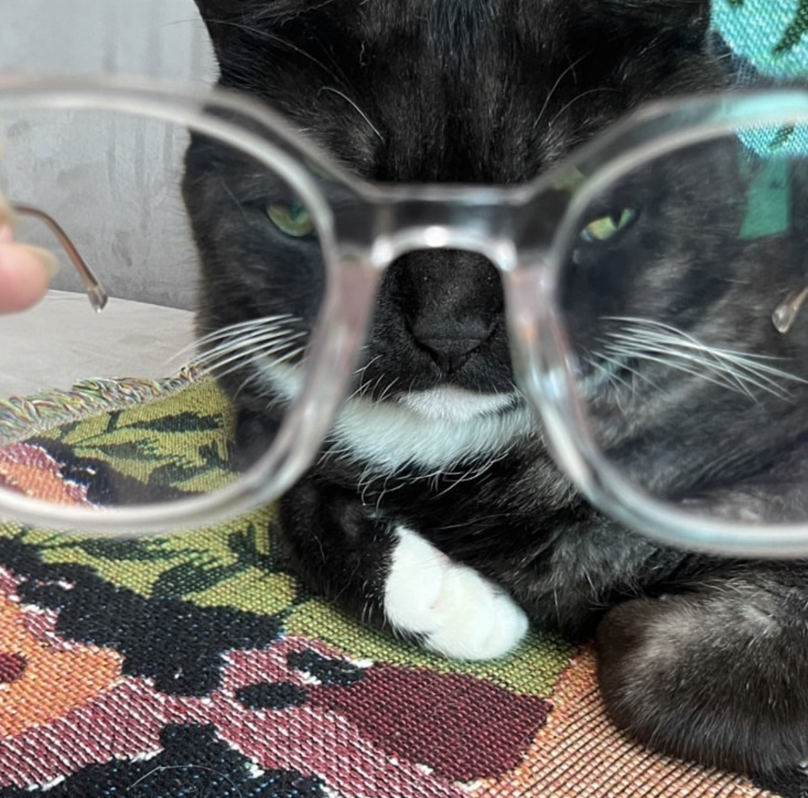
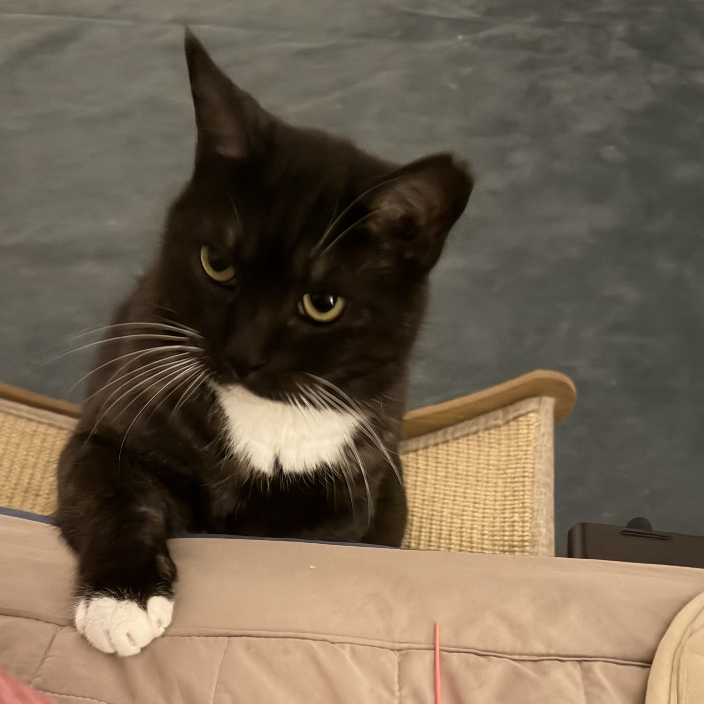
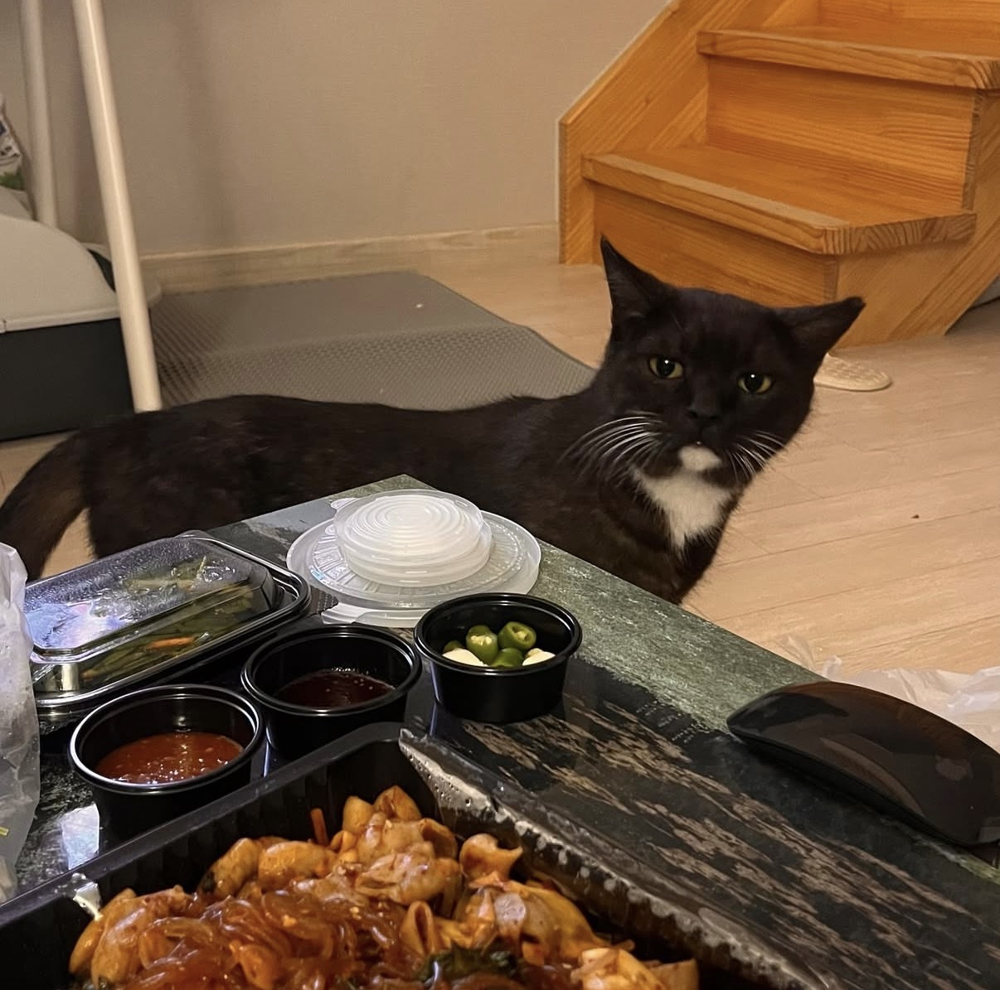
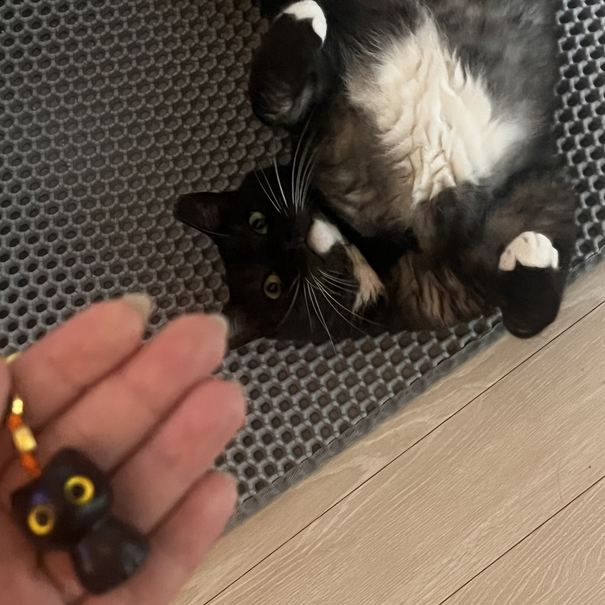
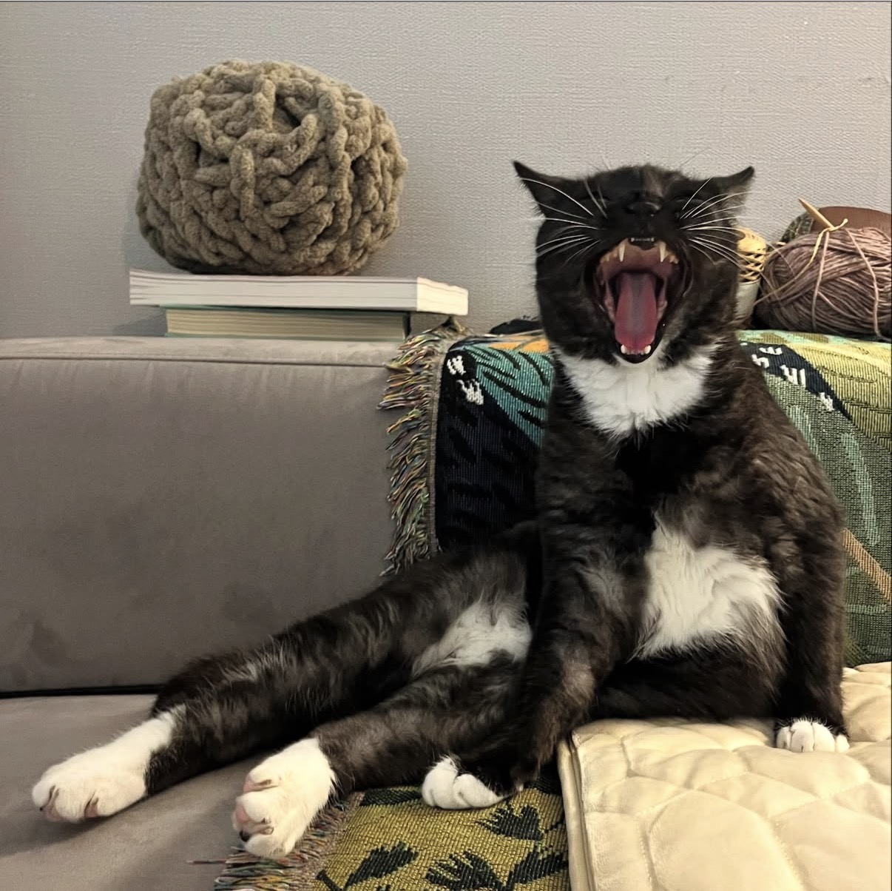

이새참
lee saecham생일 | (22-23년도 추정)
만난 날 |
집에 들어온 날 |
1. 처음에 새참이를 만났을 때에는 오른쪽 뒷다리를 절어서 병원에 갔는데 근육량이 달랐다고함.
병원 원장님 피셜 어릴 때 다쳐서 일부러 새참이 스스로 다리를 쓰지 않았던 것 같다고 함.
2. 처음 병원 갔을 때 몸무개는 4.5kg이었는데 25년도 10월 기준 5.6kg이나 된다...
26년 몸무게는 더 나갈 것으로 추정된다...(원래 길고양이가 집고양이가 되면 살이 급진적으로 찔 수 밖에 없다고 했다...)
3. 심하지 않은 천식과 결막염, 약간의 알레르기를 가지고 있다.(힝 ㅠㅠ..)
4. 스크래쳐가 있지만 발톱이 잘 안 갈린다.
5. 새참이는 속 털과 겉 털의 색이 다르다.
6. 새참이는 새참이 자신의 물건을 알고 있다.
집사의 의자 오른쪽 옆면을 제외하고는 아무데나 발톱을 긁지 않는다.
7. 새참이는 스크래쳐를 긁을 때 몸통이 동그라미가 된다.
뒷통수도 동그랗다.
새참이의 호불호
호
🕺 귀 파주는 걸 너무 좋아하신다.
🕺 따뜻한거 / 츄르 / 빗 / 뱃살 만져주기 환장하신다.
🕺 집사 좋아 고양이. 집사 반경 1미터 안에 머문다.
(뇌피셜 아님...)
불호
🔪 새참이는 높은데 올라가는 것에 그닥 관심이 없다.
🔪 바닥에 깔려있는 큰 이불 위에 올라가는 것을 싫어한다.
(침대는 예외.)
🔪 찰랑거리는 물(브리타 물병) / 쓴 약 / 발톱깎이 / 안약 / 치약 스프레이 / 청소기 / 빗자루 왕왕 싫어.
새참이의 하루 루틴
23시 | 집사기 침대에 누우면 따라옴. 집사가 감자캐는 시간인데 한 20분 후에 꼭 감자를 만드심. 30분간 침대 위 이불에서 집사와 놀이 시간을 가지고 승리의 짧은 식사를 즐김. 20분간 빗질 타임. 빗질 타임에는 계속 침대 주변을 돌아다니며 빗질 시간을 가짐.
24시| 집사의 몸 한쪽과 꼭 붙어 잠. 한 1시간 정도 같이 자다가 빈백에서 이동에 뒹굴면서 자는 걸 좋아함.
02시 | 깊게 잠이 들긴 하지만 꼭 일어나서 계단 난간에 있는 고양이 방석으로 가서 잠을 잠. (최근들어 빈백에서 자는 걸 더 즐기고, 고양이 방석에는 안약 넣기 싫을 때, 치약, 발톱깎이를 피하기 위해 감.) 피곤할 떄에는 아주 큰 소리로 코골며 잠.(마치 티라노사우르스 공룡 울음 소리처럼 ..ㅎㅎ)
05시 | 해가 뜰 무렵이면 자다가도 벌떡 일어남. 방에서 나오는 김에 앞에 있는 먹이 트릿 장난감에서 간식 몇개 빼먹어줌. 간식 배가 어느정도 채워지면 집사 자는거 좀 구경해줌. 진짜 자는지, 숨 쉬는지도 체크해줌. 진짜 자는 것 같으면 1층 창문 틀에 달려가서 햇빛을 기다려줌.
07시 | 밖이 보이기 시작하면 창틀에서 햇빛을 누구보다 만끽하며 즐겨줌. 햇빛으로 집에 그림자가 생기면 막 따라다님. 그러다 너무 덥거나 더 자고 싶으면 창문 밑 작은 계단에 끼어서 자거나 스툴 안으로 들어가서 낮잠 타임 시작 -
10시 | 까치 세 - 네마리한테 불링당하기.. (속절없이 진다. 새참이가.)
13시 | 해가 뒤로 넘어가면 잠깐의 식사타임을 가지고 2층으로 올라감. 집사가 없는 왕 넓은 침대에서 자유를 만끽하며 2차 낮잠 타임.
Zzz...
20시 | 현관 너머로 집사 발걸음 소리 들리면 바로 깸. 문 열면 계단에서 덜 뜬 눈으로 집사 맞이하거나 현관 앞에서 가지런히 앉아있음. 들어오기 전부터 문 닫고 만져주기 전까지 계속 울어줌.
21시 | 집사가 1층에 있을 경우 발매트나 담요 위, 스툴 안에서 눈치보며 쪽잠을 잠.
다시 이 루틴을 반복 ...
🖤 새참이에 대한 퀴~즈 !
🖤 어떻게 전달 될지는 모르겠지만...





